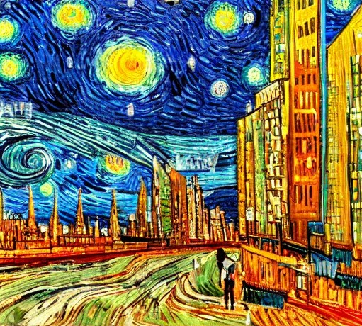
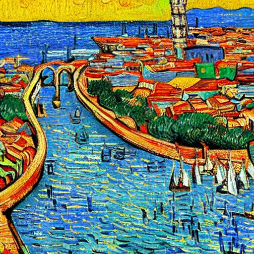
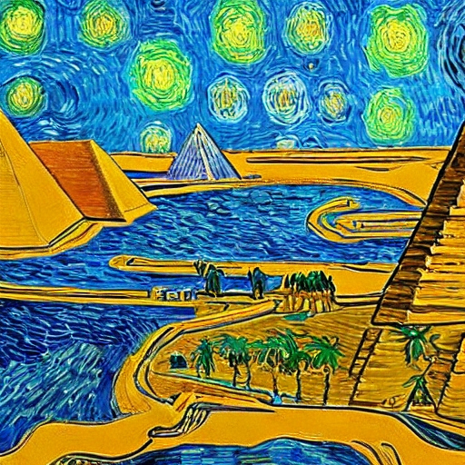

IMAGINAÇÃO TRAZIDA À LUZ
VanArt


SOBRE VANART

CIDADE
Cidade inspirada em grandes centros urbanos, em uma noite estrelada. Para gerar esta imagem, não me inspirei em nenhuma outra em particular, apenas deixaei a IA me surpreender.

RECIFE
Esta aqui foi totalmente inspirada na minha cidade natal, a qual tanto amo, Recife. Apenas pedi para que a IA gerasse aos moldes de Van Gogh e fiquei surpreso com o resultado até que bem preciso de uma bela Recife do século XIX.

EGITO
Aqui uma imagem curiosa de um Egito que mescla o antigo com o moderno e um pouco de ficção, já que até onde sabemos, o Nilo não sen encontrava tão próximo das pirâmides (ao menos as que conhecemos) como demonstrado na imagem.
INSCREVA-SE
Seja o primeiro a receber as novidades como exposições, workshops e lançamentos!